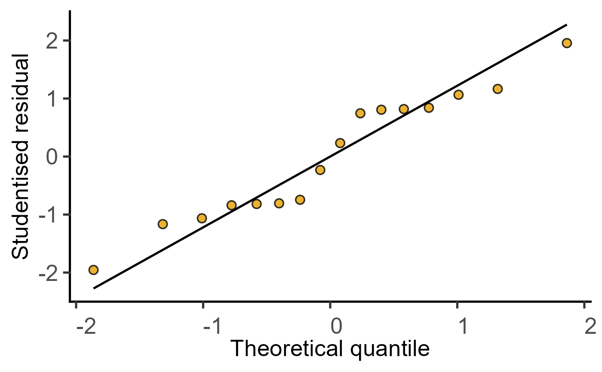

R/plot_qqmodel.R
plot_qqmodel.RdThis function takes a linear model (simple or mixed effects) and plots a QQ graph after running augment from augment to generate a table of model residuals on a saved ordinary (simple_model) or mixed model (mixed_model or mixed_model_slopes. The graph plots residuals from the model (sample) on Y axis & theoretical quantiles on X axis.
plot_qqmodel(Model)name of a saved model generated by simple_model or mixed_model
This function returns a ggplot2 object.
The function uses plot_qqline, which relies on stat_qq and stat_qq_line geometries (get help with ?stat_qq_line).
#Basic usage
m1 <- simple_model(data = data_2w_Festing,
Y_value = "GST",
Fixed_Factor = c("Treatment", "Strain"))
plot_qqmodel(m1)
